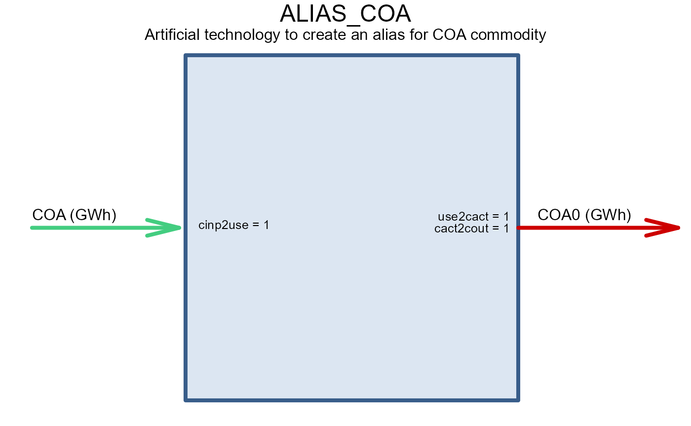

The goal of carbon capture, utilization and storage (CCS or CCUS) technologies is to reduce carbon emissions from fuels combustion and industrial processes. The emissions are captured, transported, and stored in geological formations, or used in other industrial processes. The captured CO2 potentially can be used in enhanced oil recovery (EOR), or in the production of chemicals, fuels, and materials. However, the current status of utilization is limited and the main focus is on the storage of CO2 in geological formations.
Carbon sink potential
The potential of geological storage varies by region and depends on the availability of suitable geological formations, the distance to the sources of CO2, and the existing infrastructure. Here we use an estimated value [LINK] of CCS storage potential in saline aquifers and basalt formations by region.
# A commodity to represent the storage of CO2
CO2SINK <- newCommodity(
name = "CO2SINK",
desc = "Stored CO2 in geological formations",
unit = "kt",
timeframe = "ANNUAL"
)
# Data on the potential of CO2 storage in geological formations
ccs_reserve <- get_ideea_data(name = "ccs_r5", raw = T)
# Declaration of domestic carbon sink resources
RES_CO2SINK <- newSupply(
name = "RES_CO2SINK",
desc = "Permanent geological carbon storage (saline aquifers and basalt).",
commodity = "CO2SINK",
unit = "kt",
region = unique(ccs_reserve$reg5),
reserve = data.frame(
region = ccs_reserve$reg5,
res.up = ccs_reserve$CCS_potential_GtCO2 * 1e6
) |> unique(),
availability = list(
# represent injection costs per unit of stored CO2
cost = convert(12.1, "USD/t", "cr.₹/kt") # ~0.1 cr.₹/kt, assumption
)
)@emis slot of every commodity. For example, the
emis slot of coal commodity COA@emis is set
to:
| comm | unit | emis |
|---|---|---|
| CO2 | kt/GWh | 0.33 |
GAS@emis):
| comm | unit | emis |
|---|---|---|
| CO2 | kt/GWh | 0.18 |
In the current settings, the emis parameter in the
@emis slot represents the kt of CO2 emissions
per GWh of fuel use (by default, all energy is measured in
GWh in IDEEA model).
When the fuels are used in power plants, the emissions are calculated
based on the fuel use, the emission factors, and the
combustion parameter in technology class (slot
@input) which is set to 1 by default.
CCS with fixed capture rate
The simplest way to reduce CO2 emissions of a power generation in the
model is not adjust the combustion parameter by the CCS
capture rate. The efficiency and costs associated with CCS must be also
adjusted accordingly. Bellow we “upgrade” a coal power plant from IDEEA
model dataset with CCS technology.
Coal power plant with CCS
COA <- ideea_modules$energy$COA
ECOA_prototype <- ideea_modules$techs$ECOAULT@data$ECOAULT_2030
ECOA_prototype@input
#> comm unit group combustion
#> 1 COA GWh <NA> NAIf the combustion parameter is not set (NA or
empty), the default value is used (1). For
simplicity, we assume that the plant with CCS has 90% capture rate, 10%
efficiency loss, and 50% capital, fixed, and variable costs increase.
The prototype of the CCS technology is shown below.
# no CCS
ECOA_prototype@input
#> comm unit group combustion
#> 1 COA GWh <NA> NA
# with CCS
ECOA_CCS_FX <- update(
ECOA_prototype,
name = "ECOA_CCS_FX",
desc = "Coal power plant with fixed CCS",
input = list(comm = "COA", combustion = 0.1, unit = "GWh")
)
# Efficiency, no CCS
ECOA_prototype@ceff$cinp2use
#> [1] 0.418
# Efficiency, with CCS
ECOA_CCS_FX@ceff$cinp2use <- ECOA_prototype@ceff$cinp2use * 0.9
# Costs
ECOA_CCS_FX@invcost$invcost <- ECOA_prototype@invcost$invcost * 1.5
ECOA_CCS_FX@fixom$fixom <- ECOA_prototype@fixom$fixom * 1.5
ECOA_CCS_FX@varom$varom <- ECOA_prototype@varom$varom * 1.5
# extend the availability window of the technology on the market
ECOA_CCS_FX@end$end <- 2100Finally, since the sequestration potential is also limited, we can
track the utilization of carbon storage by specifying input commodity
(CO2SINK) and in the aeff slot of the
technology. The CO2SINK commodity is used to track the
amount of CO2 stored in geological formations. We can also reduce the
emissions of conventional pollutants (NOX, SOX, PM) by the same
percentage as the CO2 emissions, specified in the auxiliary commodities
and efficiency slots @aux and @aeff.
# no CCS
ECOA_prototype@aux
#> acomm unit
#> 1 NOX kt
#> 2 SOX kt
#> 3 PM kt
ECOA_prototype@aeff |> select(acomm, comm, cinp2aout, cinp2ainp)
#> acomm comm cinp2aout cinp2ainp
#> 1 SOX COA 0.10 NA
#> 2 NOX COA 0.10 NA
#> 3 PM COA 0.03 NA
# with CCS
ECOA_CCS_FX <- update(
ECOA_CCS_FX,
aux = data.frame(
acomm = c("NOX", "SOX", "PM", "CO2SINK"),
unit = c("kt", "kt", "kt", "kt")
),
aeff = data.frame(
acomm = c("CO2SINK", ECOA_prototype@aeff$acomm),
comm = c("COA", "COA", "COA", "COA"),
cinp2ainp = c(COA@emis$emis * 0.9, NA, NA, NA), # 90% capture rate
cinp2aout = c(NA, ECOA_prototype@aeff$cinp2aout * 0.1)
),
varom = data.frame(
acomm = "CO2SINK",
cvarom = convert(120.1, "USD/t", "cr.₹/kt") # ~0.1 cr.₹/kt
)
)
draw(ECOA_CCS_FX)If CO2SINK is used, the commodity and it’s resource must
be added to the model.
Gas power plant with CCS
Similarly we can add CCS to natural gas and biomass-powered plants. Instead of updating the existing technology without CCS, we design the technology from scratch to demonstrate a technology-building process.
GAS <- ideea_modules$energy$GAS
EGAS_prototype <- ideea_modules$techs$ENGCC$ENGCC_2030
EGAS_CCS_FX <- newTechnology(
name = "EGAS_CCS_FX",
desc = "Natural gas power plant with fixed CCS",
input = list(
comm = "GAS",
unit = "GWh",
combustion = .1 # 10% of emissions are not captured by CCS
),
output = data.frame(
comm = "ELC",
unit = c("GWh")
),
aux = data.frame(
acomm = c("NOX", "SOX", "PM", "CO2SINK", "CO2"),
unit = c("kt", "kt", "kt", "kt", "kt")
),
ceff = list(
cinp2use = c(EGAS_prototype@ceff$cinp2use, NA), # 62% efficiency w/o CCS
use2cact = c(NA, .9), # 10% efficiency loss with CCS
comm = c("GAS", "ELC")
),
aeff = data.frame(
acomm = c("CO2SINK", "NOX", "SOX", "PM"),
comm = c("GAS", rep("ELC", 3)),
cinp2ainp = c(GAS@emis$emis[1], rep(NA, 3)),
cout2aout = c(NA, .01, .01, .005) # arbitrary
),
olife = list(olife = 40),
invcost = data.frame(
invcost = 1.5 * EGAS_prototype@invcost$invcost
),
fixom = data.frame(
fixom = 1.5 * EGAS_prototype@fixom$fixom
),
# variable costs are assigned in the CO2SINK supply,
# here is an alternative formulation with the same effect:
# varom = data.frame(
# acomm = "CO2SINK",
# cvarom = convert(12.1, "USD/t", "cr.₹/kt") # ~0.1 cr.₹/kt
# ),
start = list(start = 2025)
# end = list(end = 2060),
)
draw(EGAS_CCS_FX)
CCS with flexible capture rate
The example above assumes that once installed, CCS will be operated at maximum removal capacity. This setting will probably fit most decarbonization studies, but in some cases it might be helpful to have an optional use of CCS technology. For example, the technology can be designed to operate at a lower capture rate, depending on the strength of the carbon control policy, carbon price or the market.
The following case demonstrates an alternative way to design a CCS
technology with a flexible capture rate. To make the operation rate
flexible, we introduce an alternative fuel input (COA_CCS
or GAS_CCS) and define a group of fuel inputs with
different capture rates (set via combistion parameter as
before).
# Alias commodity for coal (COA) with zero emissions
COA0 <- COA |>
update(
name = "COA0",
desc = "Alias for COA"
)
ALIAS_COA <- newTechnology(
name = "ALIAS_COA",
desc = "Artificial technology to create an alias for COA commodity",
input = list(
comm = "COA",
unit = "GWh",
combustion = 0
),
output = data.frame(
comm = "COA0",
unit = "GWh"
),
cap2act = 1e12, # capable to convert GWh a year
capacity = list(stock = 1), # pre-defined capacity to reduce the model dimension
end = list(end = 2000) #
)
draw(ALIAS_COA)
This “alias” commodity does not require a new resource, it’s supply
will be defined and bounded by the supply of the original commodity via
the ALIAS_COA technology which has no costs, therefore will
not affect the model’s objective, but will be responsible for the supply
of the COA0 commodity, “made” of the COA
commodity.
Coal power plant with flexible CCS
The key difference of the flexible CCS technology vs. fixed described
above is the introduction of the group parameter in the
input and ceff slots. The group
parameter is used to define a group of commodities with different
capture rates. The ceff slot is used to define the
efficiency loss when the alternative fuel is used
(cinp2ginp) and the share of each commodity in the group to
define the maximum capture rate (share.up).
ECOA_CCS_FL <- ECOA_CCS_FX |>
update(
name = "ECOA_CCS_FL",
desc = "Coal power plant with flexible CCS",
input = list(
comm = c("COA", "COA0"),
unit = c("GWh", "GWh"),
group = c("i", "i"), # any group name
combustion = c(1, 0) # 10% of emissions are not captured by CCS
),
geff = list(
group = "i",
ginp2use = ECOA_prototype@ceff$cinp2use[1]
),
ceff = list(
comm = c("COA", "COA0"),
cinp2ginp = c(1, .9), # efficiency loss when COA is used
share.up = c(1, .9) # max share of each commodity in the group
),
# auxiliary inputs/outputs does not require adjustment for CCS
# since it is defined by CCS utilization (COA vs COA0)
aeff = data.frame(
acomm = c("CO2SINK", ECOA_prototype@aeff$acomm),
comm = c("COA0", "COA", "COA", "COA"),
cinp2ainp = c(COA@emis$emis, NA, NA, NA), # 90% capture rate
cinp2aout = c(NA, ECOA_prototype@aeff$cinp2aout)
)
)
draw(ECOA_CCS_FL)This technology is designed to operate from 0% to 90% capture rate instead of fixed 90% in the fixed rate example.
Gas power plant with flexible CCS
The same approach can be applied to the gas technology.
GAS0 <- GAS |>
update(
name = "GAS0",
desc = "Alias for GAS"
)
ALIAS_GAS <- newTechnology(
name = "ALIAS_GAS",
desc = "Artificial technology to create an alias for GAS commodity",
input = list(
comm = "GAS",
unit = "GWh",
combustion = 0
),
output = data.frame(
comm = "GAS0",
unit = "GWh"
),
cap2act = 1e12, # capable to convert GWh a year
capacity = list(stock = 1), # pre-defined capacity to reduce the model dimension
end = list(end = 2000) #
)
draw(ALIAS_GAS)
EGAS_CCS_FL <- EGAS_CCS_FX |>
update(
name = "EGAS_CCS_FL",
desc = "Gas power plant with flexible CCS",
input = list(
comm = c("GAS", "GAS0"),
unit = c("GWh", "GWh"),
group = c("i", "i"), # any group name
combustion = c(1, 0) # 10% of emissions are not captured by CCS
),
geff = list(
group = "i",
ginp2use = EGAS_prototype@ceff$cinp2use[1]
),
ceff = list(
comm = c("GAS", "GAS0"),
cinp2ginp = c(1, .9), # efficiency loss when COA is used
share.up = c(1, .9) # max share of each commodity in the group
),
aeff = data.frame(
acomm = c("CO2SINK", EGAS_prototype@aeff$acomm),
comm = c("GAS", "GAS", "GAS", "GAS"),
cinp2ainp = c(GAS@emis$emis, NA, NA, NA), # 90% capture rate
cinp2aout = c(NA, EGAS_prototype@aeff$cinp2aout)
)
)
draw(EGAS_CCS_FL)References
Carbon Capture, Utilization and Storage (CCUS) Policy Framework and
its Deployment Mechanism in India Utilization and Storage (CCUS)
https://www.niti.gov.in/sites/default/files/2022-11/CCUS-Report.pdf